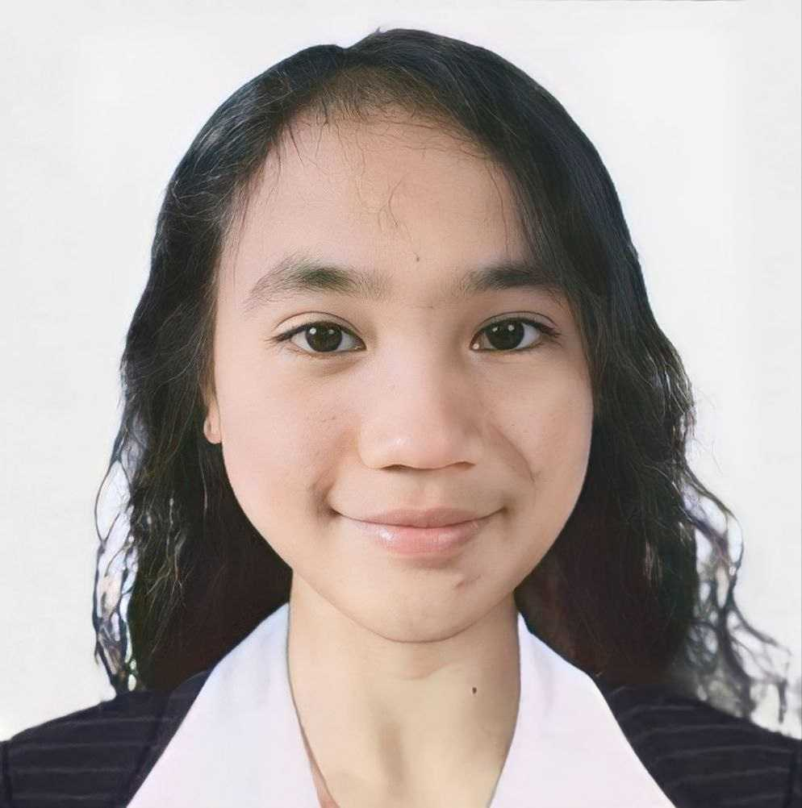

|  | Cherry CabaisCreative Computer Science graduate with a strong passion for graphic design and prototyping. |
- Trenchera Elementary School - Graduated with Honors (2005 - 2011)
- Science High School - Graduated with Honors (2011 - 2015)
- Polytechnic University of the Philippines (PUP)
Science, Technology, Engineering, and Mathematics (STEM) Strand - Graduated with Honors (2015 - 2017)